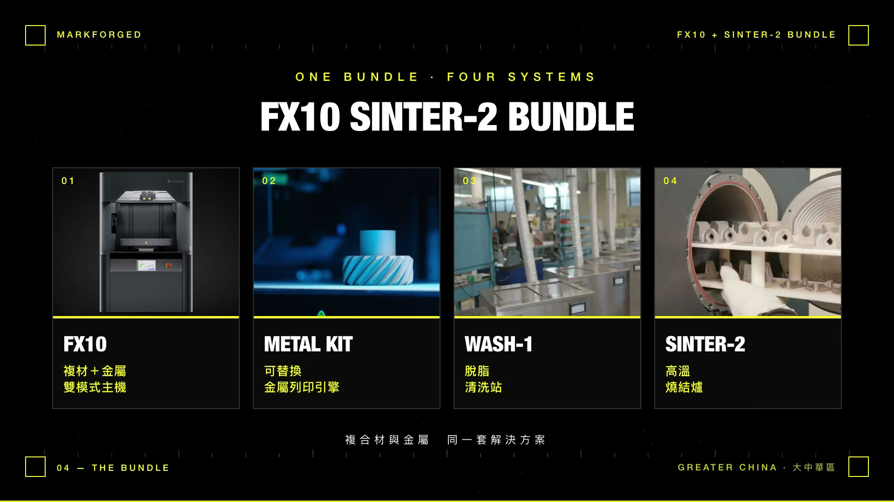

大中华区媒体中心
News & Insights
News & Insights

产品方案 · 混合制造
一台机器，复合材料与金属都能做
一套四件：FX10、Metal Kit、Wash-1、Sinter-2
复合材料与金属共用同一台主机
多数工厂导入 3D 打印时会遇到同一个岔路：复合材料与金属要不要分两套设备。分开买，预算与场地都翻倍，而且两条线各自闲置；只买一套，另一类零件就得继续外包等待。
FX10 Sinter-2 Bundle 的做法是让两者共用同一台主机。FX10 平时以连续碳纤维打印复合材料零件；需要金属件时换上 Metal Kit 金属打印引擎，再由 Wash-1 与 Sinter-2 完成清洗与烧结 —— 一条完整的金属产线，都在自己厂内。
FX10 Sinter-2 Bundle 的做法是让两者共用同一台主机。FX10 平时以连续碳纤维打印复合材料零件；需要金属件时换上 Metal Kit 金属打印引擎，再由 Wash-1 与 Sinter-2 完成清洗与烧结 —— 一条完整的金属产线，都在自己厂内。

陈中欣 Brian Chen
Markforged 大中华区暨越南区总经理
负责 Markforged 在台湾、中国、香港与越南的市场，长期与航空航天、国防与精密制造领域的制造商合作。
FX10 Sinter-2 Bundle ｜ 28 秒 ｜ Markforged 大中华区
这一套里面有什么
四个部分，涵盖从打印到烧结的完整金属流程
FX10 Sinter-2 Bundle 是一个完整配置，不是单机加购清单。四个部分各自负责金属流程的一段，缺任何一段，金属零件都无法在厂内完成。
FX10复合材料与金属双模式主机。平时以连续碳纤维打印复合材料零件
METAL KIT可更换的金属打印引擎。装上之后，同一台 FX10 就是金属打印机
WASH-1脱脂清洗站。打印完成的生胚在此去除黏结剂，才能进炉
SINTER-2高温烧结炉。生胚在此烧结成致密金属零件，流程到此完成
为什么是混合，而不是两套设备
同一台主机换引擎，复合材料与金属不再互相排挤预算与场地
多数制造现场真正的需求分布是不平均的：夹治具、工装、功能性原型这类复合材料零件天天都在打印，金属零件则是周期性出现。若为了后者单独购置一台金属设备，那台机器多数时间是闲置的。
双模式的意义在于让同一笔设备投资同时服务两种需求 —— 日常产能用在复合材料，金属需求来时切换模式，后段再接上清洗与烧结。对采购而言是一笔设备预算与一处场地；对工程而言是同一套软件与同一个操作界面。
资料来源
- FX10 Sinter-2 Bundle 的组成（FX10＋Metal Kit＋Sinter-2＋Wash-1）取自 Markforged 产品料号 F-PR-5505 的官方定义。
- 双模式运作与可更换金属打印引擎（swappable metal print engine）取自 Markforged FX10 官方产品资料。
- 本文未列出规格数值。设备规格、材料清单与场地需求请以各机型官方 datasheet 与 Facilities Guide 为准，可向我们索取。
- 视频为 Markforged 大中华区自制；片中产品影像均为原厂产品图与原厂实拍，非 AI 生成。页面图片为该视频画格。
Markforged 提供工业级增材制造系统与连续纤维复合材料，应用于航空航天、国防、汽车与精密制造。本页由 Markforged 大中华区媒体中心发布。
返回媒体中心 · markforged.tw
返回媒体中心 · markforged.tw